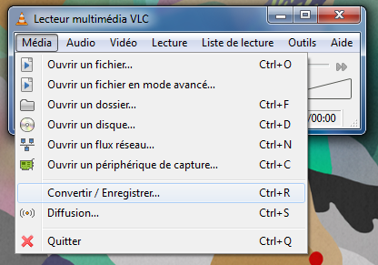

22 juin 2010
Convertir une vidéo en format WebM ou Ogg Theora avec VLC
Je vous propose un tutoriel pour encoder vos vidéos en format Ogg Theora et WebM avec le logiciel VLC.
Quel est l'intérêt de ces formats ? Tout d'abord, ils sont libres et pris en charge par pas mal de lecteurs vidéos dont VLC et MPlayer. Ces formats vous permettent aussi de diffuser de la vidéo sur votre site internet/blog sans l'installation de plugins supplémentaires si vos visiteurs utilisent un navigateur prenant en charge les balises <video> (en HTML5) comme Firefox, Google Chrome, Safari ou Opera.
Enfin, vous pouvez appliquer différents effets sur votre vidéo en utilisant le SVG.
Tout d'abord, téléchargez VLC et installez le si ce n'est pas déjà fait.
Lancer VLC, puis allez dans le menu "Média" et choisissez "Convertir / Enregistrer..."

- Utilisez le bouton "Ajouter" pour sélectionner votre fichier vidéo (vous pouvez en choisir plusieurs) ;
- Cliquez sur le bouton "Convertir / Sauvegarder" ;
- Indiquez dans "Fichier de destination" où vous souhaitez sauvegarder le fichier converti. (Donnez-lui une extension en .ogg pour le Theora ou .webm pour le WebM) ;
- Choisissez le profil "Video - VP80 + Vorbis (Webm)" puis cliquez sur Démarrer ;
- Pour du Ogg Theora choisissez le profil "Video - Theora + Vorbis (OGG)".
Il faut savoir que le codec WebM sera utilisé dans Firefox 4, Google Chrome 6, Internet Explorer 9 et les futures versions de Safari et d'Opera. De plus, des plate-formes comme YouTube fournissent déjà les vidéos dans ce format :)Enfin pour intégrer cette vidéo à votre Site Internet/Blog rien de plus simple ! Pour Wordpress par exemple, allez dans l'onglet "HTML" puis à l'endroit désiré entrez le code ci-dessous :
<video src='http://monserveur.com/mavideo.webm' controls>
Votre navigateur ne supporte pas la balise vidéo.
</video>
Si le navigateur prend en charge la balise vidéo, il affichera la vidéo avec les contrôles de lecture.
Vous pouvez aussi faire démarrer la vidéo automatiquement via le paramètre "autoplay" à placer après "controls"
Tout ce qui se trouvera entre la balise <video> et </video> sera affiché pour les utilisateurs ne disposant pas d'un navigateur compatible. L'idéal est de leur proposer un lecteur en flash tout en leur indiquant que leur navigateur n'est pas compatible ;)
Pour plus d'information sur la balise video, lisez cet article sur le Wiki de Mozilla.
Exemple de vidéo au format Ogg Theora (Firefox 3.5+/Chrome 5) :
Exemple de vidéo au format WebM (Firefox 3.7+/Chrome 6) :
Commentaires 16